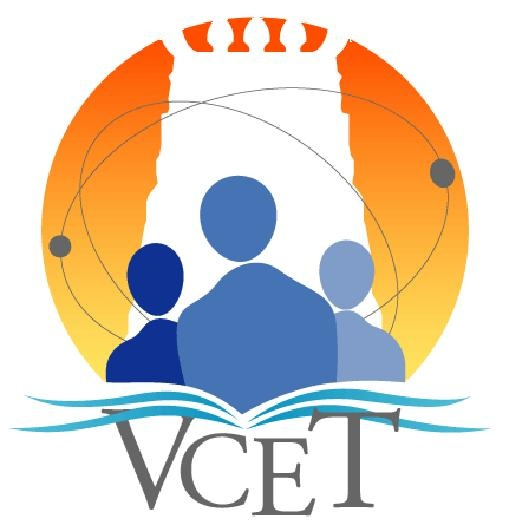
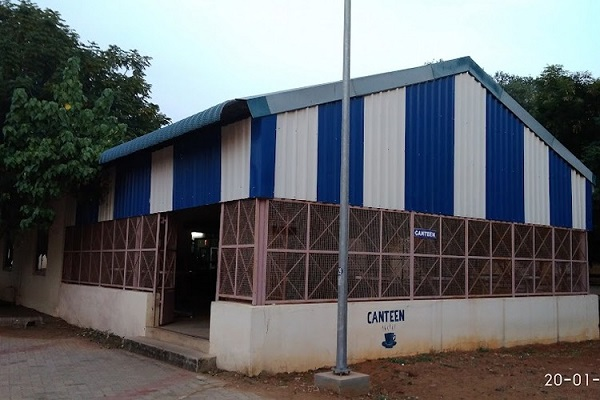

ABOUT OUR VCET SMART CANTEEN


The VCET Smart Canteen is an innovative, technology-driven platform designed to enhance the dining experience at Velammal College of Engineering and Technology (VCET). By integrating digital food ordering, real-time menu updates, and secure cashless transactions, this system aims to revolutionize the way students and staff access canteen services.
Key Features & Benefits
✅ Seamless Online Ordering – Place orders via the web or mobile app, reducing wait times.
✅ Live Menu Updates – View available dishes in real time and avoid last-minute unavailability.
✅ Cashless Payments – Pay securely using UPI, debit/credit cards, or digital wallets.
✅ Order Tracking & Notifications – Get alerts when your food is ready for pickup.
✅ Eco-Friendly Approach – Optimized inventory management reduces food waste.
Our Vision
At VCET, we believe in leveraging technology to improve convenience, efficiency, and sustainability. The VCET Smart Canteen is not just a food ordering system but a step toward a smarter, faster, and more organized campus dining experience.
Experience a smarter way to dine with VCET Smart Canteen!
Back To Home